You're likely to encounter various different Lethal Company monsters as you explore each moon in search of scrap to sell - and some of these creatures are significantly more dangerous than others.
- Baboon Hawk 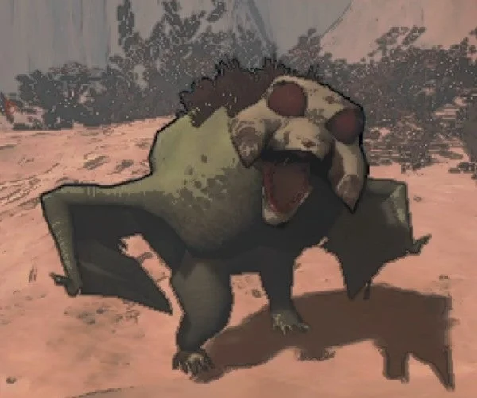
Hostile when provoked. Baboon Hawks are winged creatures that appear outside, usually in groups.
If you spot them from a distance away, it seems they're minding their own business and won't seek you out.
They can be curious, but as long as you keep your distance, they typically won't attack first unless they have a numbers advantage on you.
However, get too close, or try to attack, and they will respond with lethal force.
- Hygrodere Blob 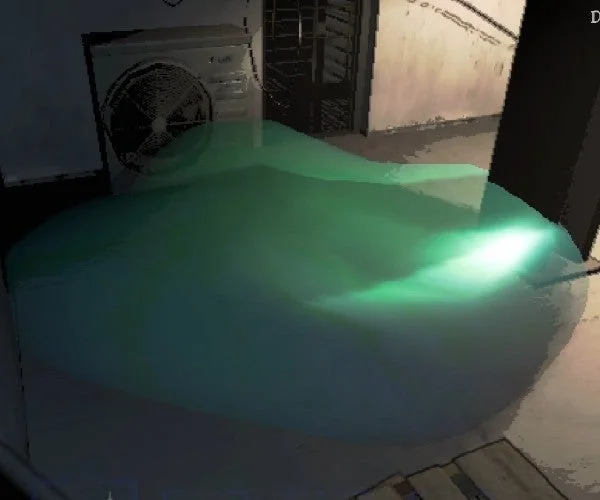
Hostile and will kill you instantly if you touch it.
The Hygrodere is a mysterious blue-green gelatinous blob that can be found indoors.
It is aggressive once it notices you, but is fortunately slow-moving and can't reach you if you stand on an elevated platform.
It's possible to jump over it if it's in your way.
- Bracken 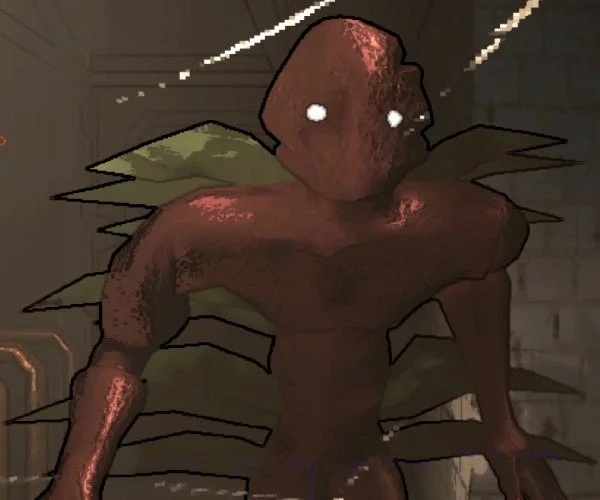
Hostile and it will attack you if you look at it for too long.
It is found indoors, and will sneak toward the nearest player and attempt to attack them.
However, if you look directly at it, it will run away for a short time. Staring at it, however, will eventually provoke it to attack.
- Circuit Bees 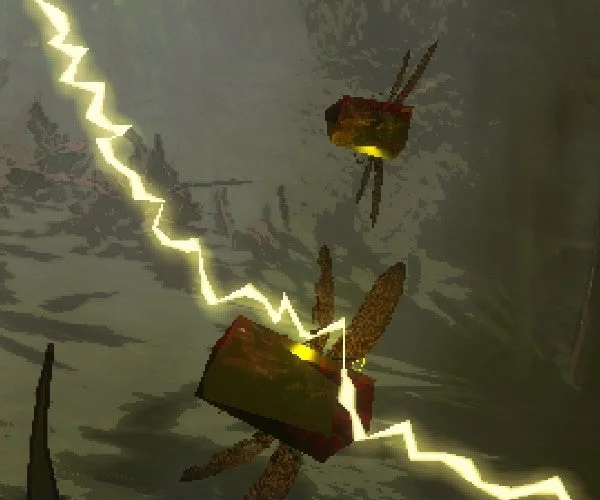
Hostile and found outdoors.
They will be gathered around a red ball, which is their hive - get too close, and they will fly out and attack you.
If they become separated from their hive, they will become an enraged swarm, roaming across the map attacking anything in sight.
- Coil-Head 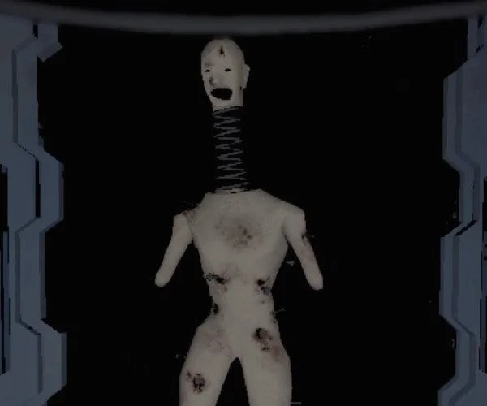
Hostile and found indoors.
The Coil-Head is a mannequin-like creature with short arms, a damaged torso, and a screaming head on a spring.
The Coil-Head will move toward you rapidly and kill you instantly, unless someone is looking at it. Don't try to fight it; gradually back away while maintaining visual contact.
- Earth Leviathan 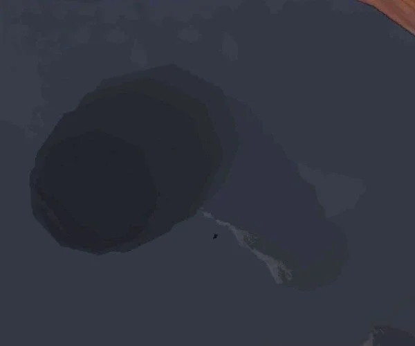
Hostile and found outdoors.
The Earth Leviathan is a gigantic worm that lives underground outside.
After dark, it may spawn in and begin to roam underground. If you're walking outside and hear a rumble, the Earth Leviathan may be underneath you.
The best thing to do is abruptly switch direction and sprint as fast as possible away from where you were headed, as that's where the worm will emerge.
Drop any heavy items you're holding that may slow you down.
If it emerges beneath you, you'll instantly die.
- Eyeless Dogs 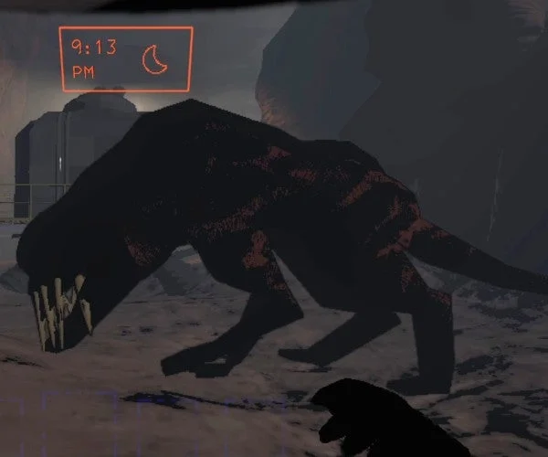
Hostile and found outdoors.
Eyeless Dogs are large canine creatures with a dark ridge along their back and tail.
They spawn outside after dark. They have giant fanged mouths - if one catches you, it will grab you in its jaws and shake you back and forth, killing you.
However, as the name implies, Eyeless Dogs have poor vision, meaning you can try to sneak past them as long as you avoid making too much noise.
- Forest Keeper 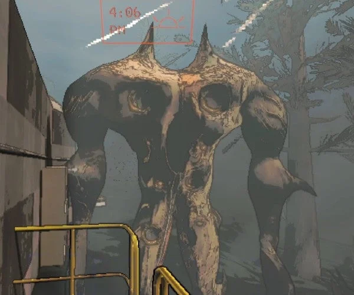
Hostile and found outdoors.
These terrifying giant creatures appear outside, after the sun begins to set.
Forest Keepers will spawn by climbing out of the ground, and then begin roaming around the area, noticeable by their loud thumping footsteps.
If you encounter one, crouch and stay still in the hope they don't notice you. If they catch you, they will grab you with their giant hands and eat you.
They can't get you once you're safely inside the ship, however.
- Ghost Girl 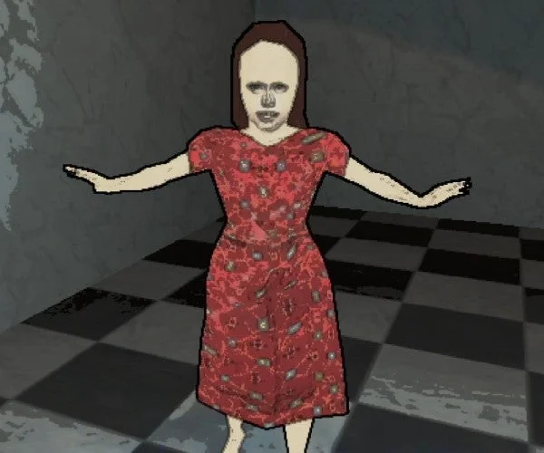
Hostile and found indoors. The Ghost Girl can be found on distant moons that are more expensive to get to.
She only haunts one player at a time, meaning if you see her, you've been chosen as her victim.
Nobody else can see her, not even if you're spectating the haunted player.
The girl may appear standing still for a short time, but if she starts skipping toward you, you'll need to run away as fast as possible.
If she catches you, she will remove your head, killing you instantly.
- Hoarding Bug 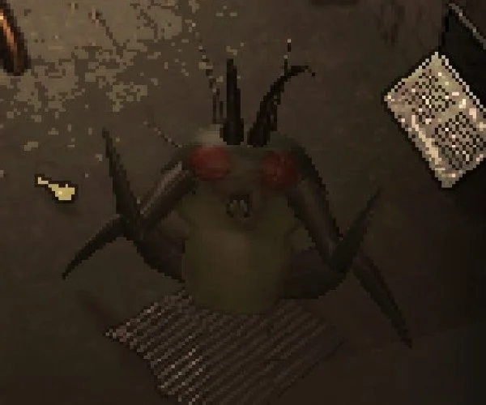
Only hostile when provoked. The Hoarding Bug is found indoors, and much like you and your colleagues, spends their time seeking out and collecting loot.
You'll likely find them guarding their collection of objects - they will only attack if you try to steal from them. However, they can be killed by hitting them with signs or shovels.
- Jester 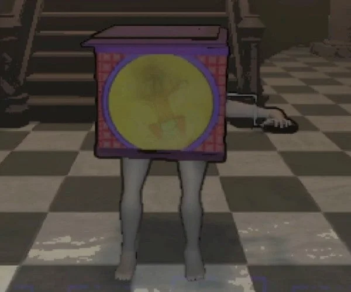 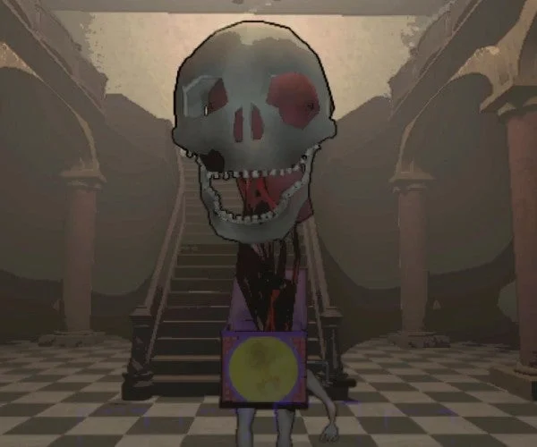
Hostile and found indoors. The Jester is only found on high-level moons. It appears to be a jack-in-the-box with legs and an arm sticking out of it. It may run around in your vicinity and appear passive initially, but eventually it will run up to you and start winding up its mechanism.
The Jester will spend some time winding up (about 30 seconds, in our experience). During this time, all players should leave the building as quickly as possible.
Once the Jester finishes winding up, a giant skull will pop out and advance toward you, killing you instantly. It will then pursue the nearest player inside the building, becoming faster and faster, and will not stop until everyone has left or is dead.
- Mask Crewmate 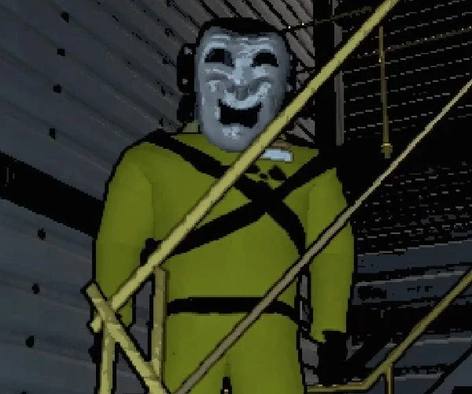
Hostile; found both indoors and outdoors.
Comedy and Tragedy masks can spawn as loot on high-level planets.
If you find one of these masks, beware, as they will kill crewmates and transform them into Masked monsters.
If you encounter a crewmate that has been possessed and turned into a Masked monster, they will run toward you with arms outstretched, attempting to grab you.
If they're successful, the eyes of the mask will glow red, and blood will spew from its mouth as it transforms you.
- Nutcracker 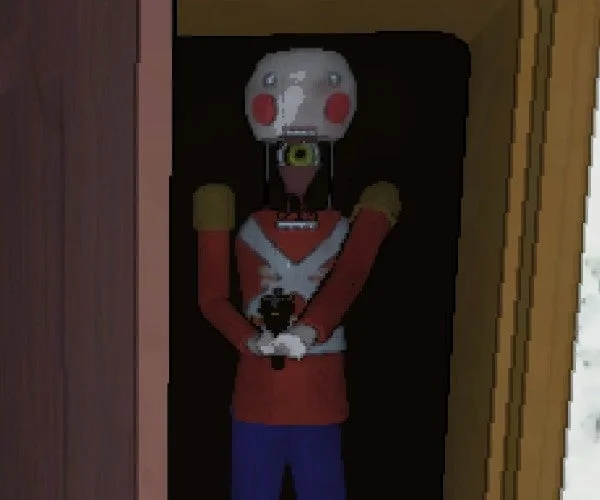
Hostile and found indoors. The Nutcracker is a wooden doll wielding a shotgun.
As it walks around the level, it will occasionally stop and raise its head, exposing a yellow eye where its neck should be. It will then scan the vicinity, making unsettling wooden clacking noises.
If the Nutcracker detects movement while it is scanning, it will pursue and shoot the culprit, even if they subsequently stop moving.
- Snare Flea 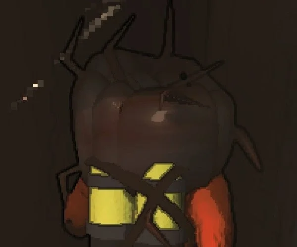
Hostile and found indoors. The Snare Flea is a nasty bug that hides on ceilings indoors, waiting for an unsuspecting player to wander underneath, at which point it will drop down and wrap itself around their head, suffocating them over several seconds until they die.
You can either have a colleague hit it with a shovel or sign or you can try running for the exit.
- Spider 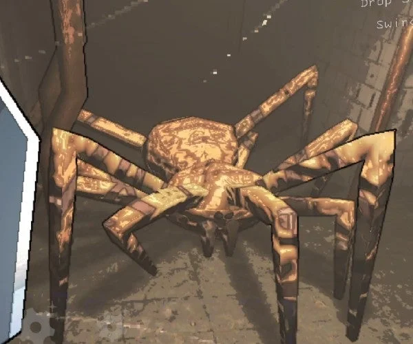
Hostile and found indoors. Bunker Spiders are large arachnids that can be found indoors.
They weave webs in their nearby vicinity, so be careful not to step in one - it will trap you, and alert the spider to your presence, invariably leading to your swift demise.
Bunker Spiders are hard to kill, so best avoided by sneaking past their webs and staying out of their territory.
- Spore Lizard 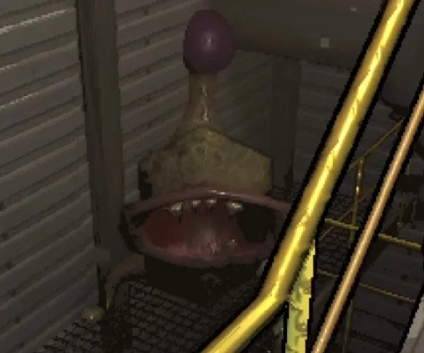
Hostile when provoked and found indoors.
The Spore Lizard is a four-legged creature with a huge round mouth and a purple orb at the end of its tail.
If you encounter it running through the corridors, it's likely to stop, open its mouth at you, and wag its tail.
This creature isn't much of a threat, instead behaving more like a playful puppy.
- Thumper 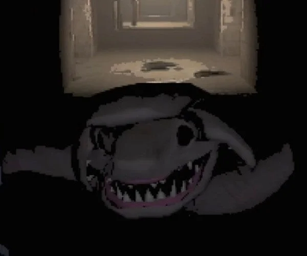
Hostile and found indoors.
The Thumper is a creature with a shark-like head that drags itself across the corridors using two long arm-like limbs.
The Thumper can't hear, so won't be attracted to any sound you make. However, it's fast, and will charge in a straight line when it notices you, killing you in one hit if it reaches you.
If you need to fight the Thumper, it's possible to position yourself on a railing or similar and remain out of reach in order to hit it. You could also coordinate with teammates to hit it from behind once it's charged past you.